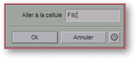

<!-- Documentation XQuad (c)1995-2000 AXENE contact axene@axene.org>
<html>

<head>
<title>Dialog Box: Reach cell</title>
</head>

<body BGCOLOR="#FFFFFF" BACKGROUND="Images/back.gif" TEXT="#000000">

<p ALIGN="right">  </p>

<p><br>
<br>
The <i>Reach Cell</i> dialog box moves the active cell and worksheet display area to the
cell designated by indicated coordinates.<br>
<br>
</p>

<hr>

<p align="center"><br>
 <br>
<small><i>Screen shot: Reach cell dialog box.</i></small></p>

<p><br>
</p>

<hr>

<p><br>
</p>

<h3>Upper Portion of the Dialog Box:</h3>

<ul>
  <li><a NAME="entry_goto">The <i>Go to Cell</i> text field specifies the destination cell
    coordinates. Coordinates consist of letters between A and ZZ to designate the column and a
    number between 1 and 30,000 to designate a row. This text field accepts both complete
    coordinates (column AND row) or simple coordinates (column OR row). Example : 12, AG456,
    3151........</a></li>
</ul>

<p><br>
</p>

<h3>Lower Portion of the Dialog Box:</h3>

<ul>
  <li><a NAME="button_ok"><i>&quot;Ok&quot;</i> closes the box and moves the displayed area of
    the worksheet and the active cell to the specified location.</a><br>
    &nbsp;</li>
  <li><a NAME="button_cancel"><i>&quot;Cancel&quot;</i> closes the box without any changes.</a></li>
</ul>

<p><br>
</p>

<hr>

<p ALIGN="right"></p>
</body>
</html>
